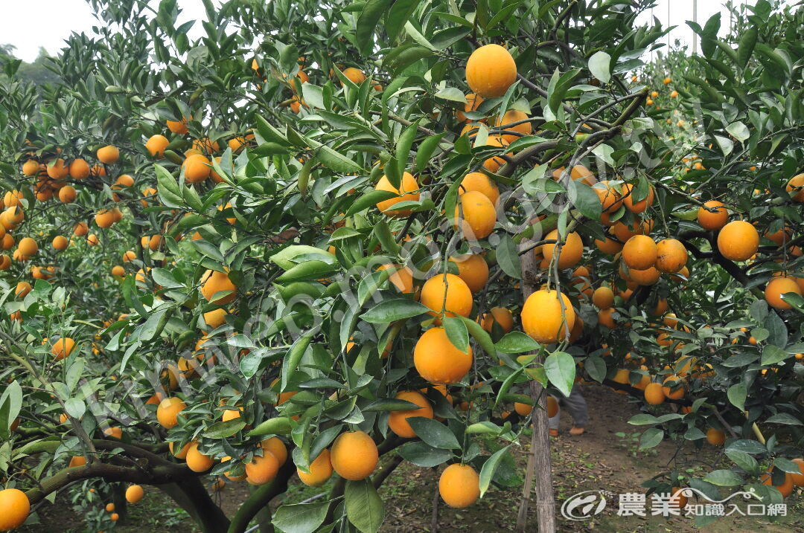
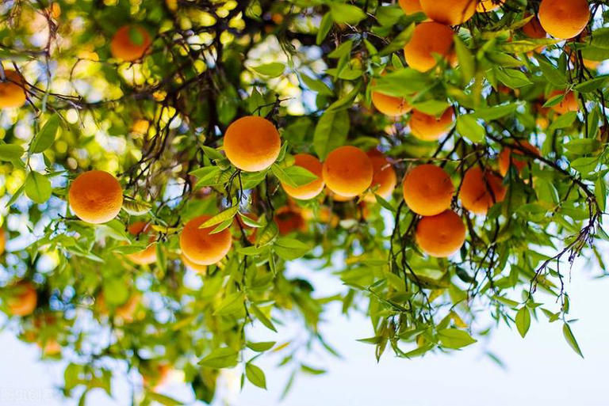

我最喜歡的水果
台灣柑橘
柑橘為臺灣分佈最廣，產量最高，產值最大之果樹，栽培之柑種極多，包括椪柑、桶柑、柳橙、麻豆文旦、白柚、檸檬、海梨柑、葡萄柚、金柑、茂谷柑、萊姆、明尼桔柚、晚崙西亞橙、臍橙等。

產區分佈：
柑橘產區分佈全國，椪柑主要產區分佈於苗栗、臺中、雲林、嘉義及臺南等縣； 柳橙分佈於南投、雲林、嘉義及台南等縣；桶柑分佈於宜蘭、新竹、苗栗、臺中、花蓮及臺東等縣；麻豆文旦分佈於花蓮、臺南、苗栗、宜蘭等縣；檸檬多數種植於屏東縣；海梨柑為新竹縣特產；金柑為宜蘭縣特產；白柚主要種植於臺南、臺東及嘉義等縣；晚崙西亞為臺東縣重要特產。

產期：
臺灣柑橘種類繁多，至週年皆有柑桔類生產，如檸檬、萊姆全年生產，早熟種如麻豆文旦自八月下旬開始採收，椪柑自十月開始上市，柳橙自十一月採收，晚熟種如桶柑、茂谷柑自二月開始上市，晚崙西亞產期更晚，於三、四月上市。
資料來源: